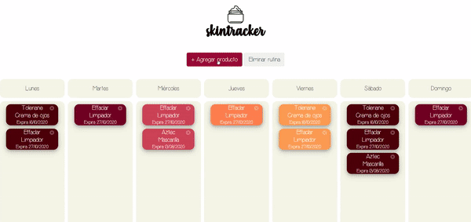

Projects
Skintracker
A skincare routine calendar. Final project for Centraal Academy's fullstack bootcamp.
JavaScript • CSS/Sass • Node.js • Express.js • MongoDB
B&A Wedding Website
A wedding digital invitation with a RSVP form that I custom made for my friends Brenda & Aarón.
React.js • CSS • Node.js • Express.js • MongoDB
Laura Accesorios
Shopify's template customization for a local jewerly store in Texas, USA.
Liquid • CSS/Sass
Open in: Browser
© Portrait byIsamar Zúñiga